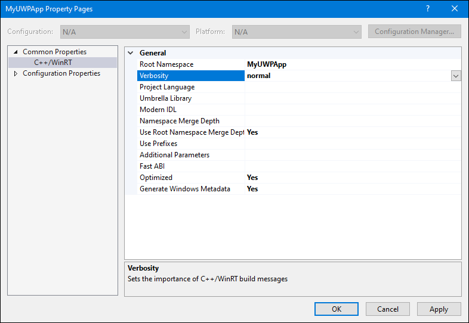
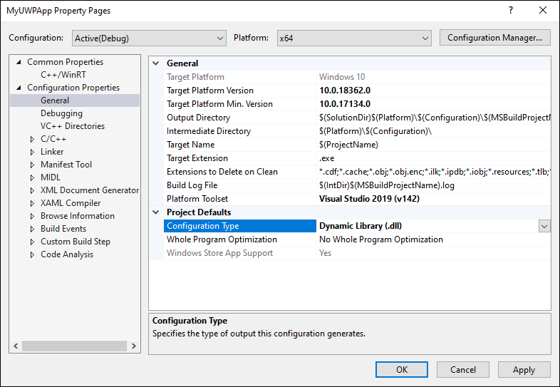
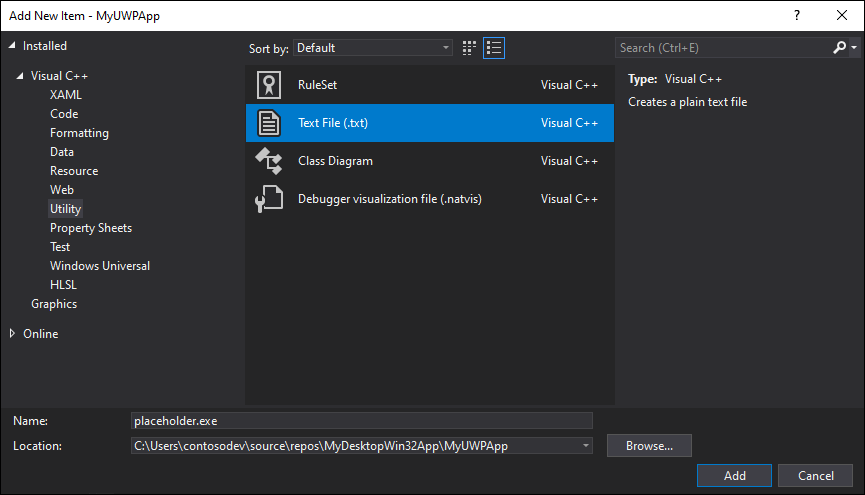
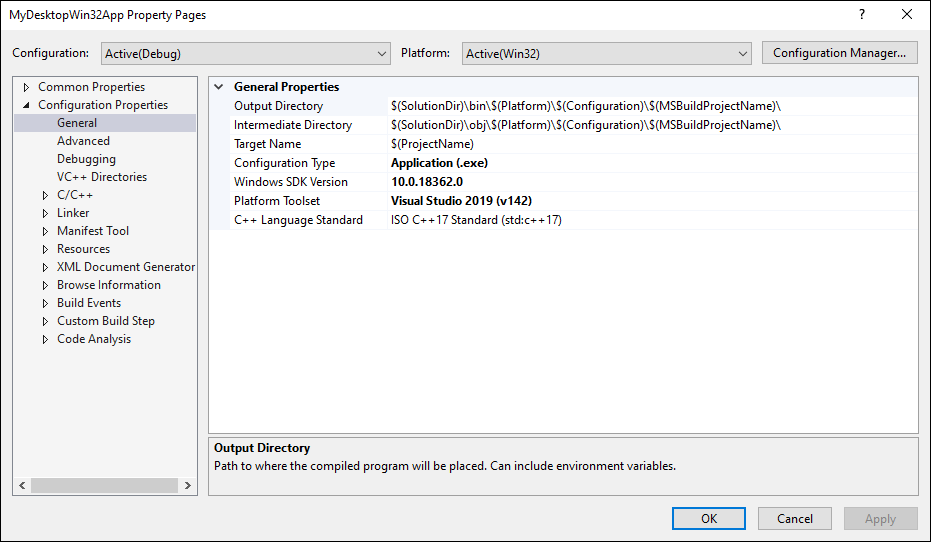
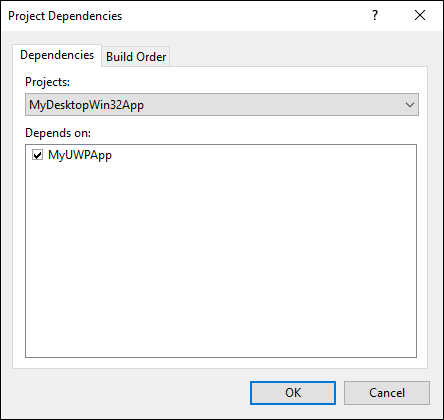
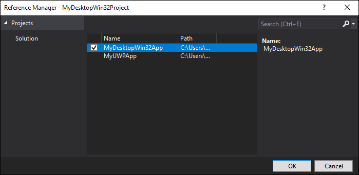
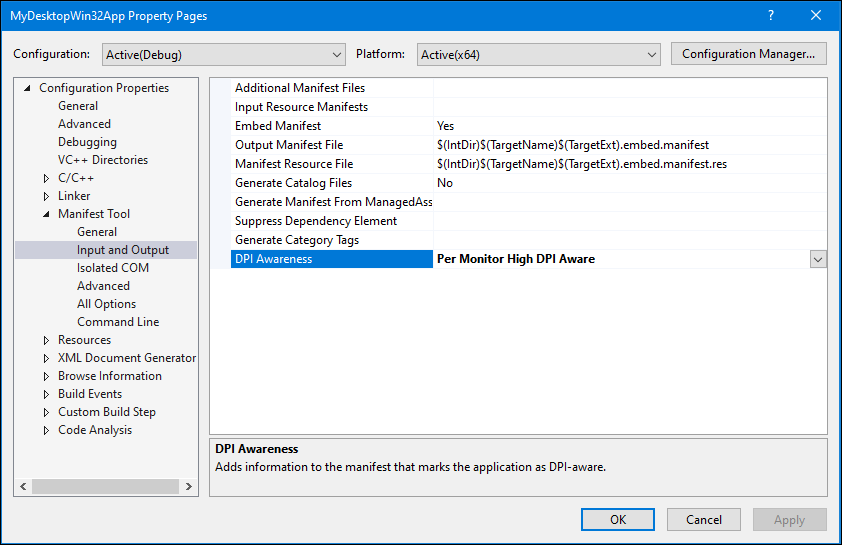
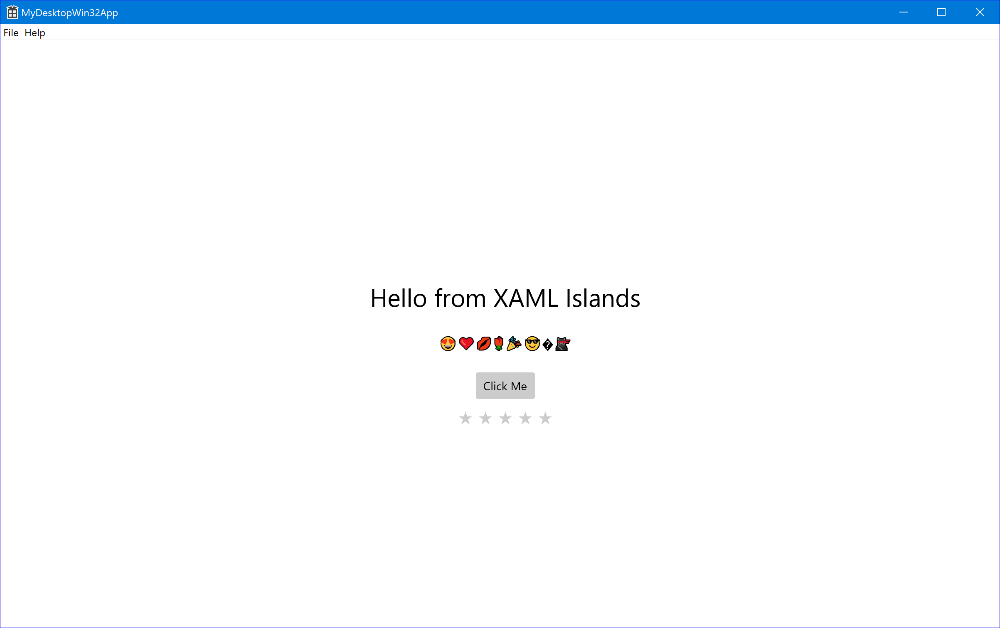

Host a custom WinRT XAML control in a C++ desktop (Win32) app
Important
This topic uses or mentions types from the CommunityToolkit/Microsoft.Toolkit.Win32 GitHub repo. For important info about XAML Islands support, please see the XAML Islands Notice in that repo.
This article demonstrates how to use the WinRT XAML hosting API to host a custom WinRT XAML control in a new C++ desktop app. If you have an existing C++ desktop app project, you can adapt these steps and code examples for your project.
To host a custom WinRT XAML control, you'll create the following projects and components as part of this walkthrough:
Windows Desktop Application project. This project implements a native C++ desktop app. You'll add code to this project that uses the WinRT XAML hosting API to host a custom WinRT XAML control.
UWP app project (C++/WinRT). This project implements a custom WinRT XAML control. It also implements a root metadata provider for loading metadata for custom WinRT XAML types in the project.
Requirements
- Visual Studio 2019 version 16.4.3 or later.
- Windows 10, version 1903 SDK (version 10.0.18362) or later.
- C++/WinRT Visual Studio Extension (VSIX) installed with Visual Studio. C++/WinRT is an entirely standard modern C++17 language projection for Windows Runtime (WinRT) APIs, implemented as a header-file-based library, and designed to provide you with first-class access to the modern Windows API. For more information, see C++/WinRT.
Create a desktop application project
In Visual Studio, create a new Windows Desktop Application project named MyDesktopWin32App. This project template is available under the C++, Windows, and Desktop project filters.
In Solution Explorer, right-click the solution node, click Retarget solution, select the 10.0.18362.0 or a later SDK release, and then click OK.
Install the Microsoft.Windows.CppWinRT NuGet package to enable support for C++/WinRT in your project:
- Right-click the MyDesktopWin32App project in Solution Explorer and choose Manage NuGet Packages.
- Select the Browse tab, search for the Microsoft.Windows.CppWinRT package, and install the latest version of this package.
In the Manage NuGet Packages window, install the following additional NuGet packages:
- Microsoft.Toolkit.Win32.UI.SDK (latest stable version). This package provides several build and run time assets that enable XAML Islands to work in your app.
- Microsoft.Toolkit.Win32.UI.XamlApplication (latest stable version). This package defines the Microsoft.Toolkit.Win32.UI.XamlHost.XamlApplication class, which you will use later in this walkthrough.
- Microsoft.VCRTForwarders.140.
Add a reference to the Windows Runtime metadata:
- In Solution Explorer, right-click on your project References node and select Add Reference.
- Click the Browse button at the bottom of the page and navigate to the UnionMetadata folder in your SDK install path. By default the SDK will be installed to
C:\Program Files (x86)\Windows Kits\10\UnionMetadata. - Then, select the folder named after the Windows version you are targeting (e.g. 10.0.18362.0) and inside of that folder pick the
Windows.winmdfile. - Click OK to close the Add Reference dialog.
Build the solution and confirm that it builds successfully.
Create a UWP app project
Next, add a UWP (C++/WinRT) app project to your solution and make some configuration changes to this project. Later in this walkthrough, you'll add code to this project to implement a custom WinRT XAML control and define an instance of the Microsoft.Toolkit.Win32.UI.XamlHost.XamlApplication class.
In Solution Explorer, right-click the solution node and select Add -> New Project.
Add a Blank App (C++/WinRT) project to your solution. Name the project MyUWPApp and make sure the target version and minimum version are both set to Windows 10, version 1903 or later.
Install the Microsoft.Toolkit.Win32.UI.XamlApplication NuGet package in the MyUWPApp project. This package defines the Microsoft.Toolkit.Win32.UI.XamlHost.XamlApplication class, which you will use later in this walkthrough.
- Right-click the MyUWPApp project and choose Manage NuGet Packages.
- Select the Browse tab, search for the Microsoft.Toolkit.Win32.UI.XamlApplication package, and install the latest stable version of this package.
Right-click the MyUWPApp node and select Properties. On the Common Properties -> C++/WinRT page, set the Verbosity property to normal and then click Apply. When you are done, the properties page should look like this.

On the Configuration Properties -> General page of the properties window, set Configuration Type to Dynamic Library (.dll), and then click OK to close the properties window.

Add a placeholder executable file to the MyUWPApp project. This placeholder executable file is required for Visual Studio to generate the required project files and properly build the project.
In Solution Explorer, right-click the MyUWPApp project node and select Add -> New Item.
In the Add New Item dialog, select Utility in the left page, and then select Text File (.txt). Enter the name placeholder.exe and click Add.

In Solution Explorer, select the placeholder.exe file. In the Properties window, make sure the Content property is set to True.
In Solution Explorer, right-click the Package.appxmanifest file in the MyUWPApp project, select Open With, and select XML (Text) Editor, and click OK.
Find the <Application> element and change the Executable attribute to the value
placeholder.exe. When you are done, the <Application> element should look similar to this.<Application Id="App" Executable="placeholder.exe" EntryPoint="MyUWPApp.App"> <uap:VisualElements DisplayName="MyUWPApp" Description="Project for a single page C++/WinRT Universal Windows Platform (UWP) app with no predefined layout" Square150x150Logo="Assets\Square150x150Logo.png" Square44x44Logo="Assets\Square44x44Logo.png" BackgroundColor="transparent"> <uap:DefaultTile Wide310x150Logo="Assets\Wide310x150Logo.png"> </uap:DefaultTile> <uap:SplashScreen Image="Assets\SplashScreen.png" /> </uap:VisualElements> </Application>Save and close the Package.appxmanifest file.
In Solution Explorer, right-click the MyUWPApp node and select Unload Project.
Right-click the MyUWPApp node and select Edit MyUWPApp.vcxproj.
Find the
<Import Project="$(VCTargetsPath)\Microsoft.Cpp.Default.props" />element and replace it with the following XML. This XML adds several new properties immediately before the element.<PropertyGroup Label="Globals"> <WindowsAppContainer>true</WindowsAppContainer> <AppxGeneratePriEnabled>true</AppxGeneratePriEnabled> <ProjectPriIndexName>App</ProjectPriIndexName> <AppxPackage>true</AppxPackage> </PropertyGroup> <Import Project="$(VCTargetsPath)\Microsoft.Cpp.Default.props" />Save and close the project file.
In Solution Explorer, right-click the MyUWPApp node and select Reload Project.
Configure the solution
In this section, you'll update the solution that contains both projects to configure project dependencies and build properties required for the projects to build correctly.
In Solution Explorer, right-click the solution node and add a new XML file named Solution.props.
Add the following XML to the Solution.props file.
<?xml version="1.0" encoding="utf-8"?> <Project xmlns="http://schemas.microsoft.com/developer/msbuild/2003"> <PropertyGroup> <IntDir>$(SolutionDir)\obj\$(Platform)\$(Configuration)\$(MSBuildProjectName)\</IntDir> <OutDir>$(SolutionDir)\bin\$(Platform)\$(Configuration)\$(MSBuildProjectName)\</OutDir> <GeneratedFilesDir>$(IntDir)Generated Files\</GeneratedFilesDir> </PropertyGroup> </Project>From the View menu, click Property Manager (depending on your configuration, this may be under View -> Other Windows).
In the Property Manager window, right-click MyDesktopWin32App and select Add Existing Property Sheet. Navigate to the Solution.props file you just added and click Open.
Repeat the previous step to add the Solution.props file to the MyUWPApp project in the Property Manager window.
Close the Property Manager window.
Confirm that the property sheet changes were saved properly. In Solution Explorer, right-click the MyDesktopWin32App project and choose Properties. Click Configuration Properties -> General, and confirm that the Output Directory and Intermediate Directory properties have the values you added to the Solution.props file. You can also confirm the same for the MyUWPApp project.

In Solution Explorer, right-click the solution node and choose Project Dependencies. In the Projects drop-down, make sure that MyDesktopWin32App is selected, and select MyUWPApp in the Depends On list.

Click OK.
Add code to the UWP app project
You're now ready to add code to the MyUWPApp project to perform these tasks:
- Implement a custom WinRT XAML control. Later in this walkthrough, you'll add code that hosts this control in the MyDesktopWin32App project.
- Define a type that derives from the Microsoft.Toolkit.Win32.UI.XamlHost.XamlApplication class in the Windows Community Toolkit.
Define a custom WinRT XAML control
In Solution Explorer, right-click MyUWPApp and select Add -> New Item. Select the Visual C++ node in the left pane, select Blank User Control (C++/WinRT), name it MyUserControl, and click Add.
In the XAML editor, replace the contents of the MyUserControl.xaml file with the following XAML and then save the file.
<UserControl x:Class="MyUWPApp.MyUserControl" xmlns="http://schemas.microsoft.com/winfx/2006/xaml/presentation" xmlns:x="http://schemas.microsoft.com/winfx/2006/xaml" xmlns:local="using:MyUWPApp" xmlns:d="http://schemas.microsoft.com/expression/blend/2008" xmlns:mc="http://schemas.openxmlformats.org/markup-compatibility/2006" mc:Ignorable="d"> <StackPanel HorizontalAlignment="Center" Spacing="10" Padding="20" VerticalAlignment="Center"> <TextBlock HorizontalAlignment="Center" TextWrapping="Wrap" Text="Hello from XAML Islands" FontSize="30" /> <TextBlock HorizontalAlignment="Center" Margin="15" TextWrapping="Wrap" Text="😍❤💋🌹🎉😎 🐱👤" FontSize="16" /> <Button HorizontalAlignment="Center" x:Name="Button" Click="ClickHandler">Click Me</Button> </StackPanel> </UserControl>
Define a XamlApplication class
Next, revise the default App class in the MyUWPApp project to derive from the Microsoft.Toolkit.Win32.UI.XamlHost.XamlApplication class provided by the Windows Community Toolkit. This class supports the IXamlMetadataProvider interface, which enables your app to discover and load metadata for custom WinRT XAML controls in assemblies in the current directory of your application at run time. This class also initializes the WinRT XAML framework for the current thread. Later in this walkthrough you'll update the desktop project to create an instance of this class.
Note
Each solution that uses XAML Islands can contain only one project that defines a XamlApplication object. All custom WinRT XAML controls in your app share the same XamlApplication object.
In Solution Explorer, right-click the MainPage.xaml file in the MyUWPApp project. Click Remove and then Delete to delete this file permanently from the project.
In the MyUWPApp project, expand App.xaml file.
Replace the contents of the App.xaml, App.cpp, App.h, and App.idl files with the following code.
App.xaml:
<Toolkit:XamlApplication x:Class="MyUWPApp.App" xmlns:Toolkit="using:Microsoft.Toolkit.Win32.UI.XamlHost" xmlns="http://schemas.microsoft.com/winfx/2006/xaml/presentation" xmlns:x="http://schemas.microsoft.com/winfx/2006/xaml" xmlns:local="using:MyUWPApp"> </Toolkit:XamlApplication>App.idl:
namespace MyUWPApp { [default_interface] runtimeclass App : Microsoft.Toolkit.Win32.UI.XamlHost.XamlApplication { App(); } }App.h:
#pragma once #include "App.g.h" #include "App.base.h" namespace winrt::MyUWPApp::implementation { class App : public AppT2<App> { public: App(); ~App(); }; } namespace winrt::MyUWPApp::factory_implementation { class App : public AppT<App, implementation::App> { }; }App.cpp:
#include "pch.h" #include "App.h" #include "App.g.cpp" using namespace winrt; using namespace Windows::UI::Xaml; namespace winrt::MyUWPApp::implementation { App::App() { Initialize(); AddRef(); m_inner.as<::IUnknown>()->Release(); } App::~App() { Close(); } }Note
The
#include "App.g.cpp"statement is necessary when the Optimized property on the Common Properties -> C++/WinRT page of the project properties is set to Yes. This is the default for new C++/WinRT projects. For more details about the effects of the Optimized property, see this section.
Add a new header file to the MyUWPApp project named app.base.h.
Add the following code to the app.base.h file, save the file, and close it.
#pragma once namespace winrt::MyUWPApp::implementation { template <typename D, typename... I> struct App_baseWithProvider : public App_base<D, ::winrt::Windows::UI::Xaml::Markup::IXamlMetadataProvider> { using IXamlType = ::winrt::Windows::UI::Xaml::Markup::IXamlType; IXamlType GetXamlType(::winrt::Windows::UI::Xaml::Interop::TypeName const& type) { return _appProvider.GetXamlType(type); } IXamlType GetXamlType(::winrt::hstring const& fullName) { return _appProvider.GetXamlType(fullName); } ::winrt::com_array<::winrt::Windows::UI::Xaml::Markup::XmlnsDefinition> GetXmlnsDefinitions() { return _appProvider.GetXmlnsDefinitions(); } private: bool _contentLoaded{ false }; winrt::MyUWPApp::XamlMetaDataProvider _appProvider; }; template <typename D, typename... I> using AppT2 = App_baseWithProvider<D, I...>; }Build the solution and confirm that it builds successfully.
Configure the desktop project to consume custom control types
Before the MyDesktopWin32App app can host a custom WinRT XAML control in a XAML Island, it must be configured to consume custom control types from the MyUWPApp project. There are two ways to do this, and you can choose either option as you complete this walkthrough.
Option 1: Package the app using MSIX
You can package the app in an MSIX package for deployment. MSIX is the modern app packaging technology for Windows, and it is based on a combination of MSI, .appx, App-V and ClickOnce installation technologies.
Add a new Windows Application Packaging Project to your solution. As you create the project, name it MyDesktopWin32Project and select Windows 10, version 1903 (10.0; Build 18362) for both the Target version and Minimum version.
In the packaging project, right-click the Applications node and choose Add reference. In the list of projects, select the check box next to the MyDesktopWin32App project and click OK.

For info about distributing/deploying the package, see Manage your MSIX deployment.
Note
If you choose to not package your application in an MSIX package for deployment, then computers that run your app must have the Visual C++ Runtime installed.
Option 2: Create an application manifest
You can add an application manifest to your app.
Right-click the MyDesktopWin32App project and select Add -> New Item.
In the Add New Item dialog, click Web in the left pane and select XML File (.xml).
Name the new file app.manifest and click Add.
Replace the contents of the new file with the following XML. This XML registers custom control types in the MyUWPApp project.
<?xml version="1.0" encoding="utf-8"?> <assembly xmlns="urn:schemas-microsoft-com:asm.v1" xmlns:asmv3="urn:schemas-microsoft-com:asm.v3" manifestVersion="1.0"> <asmv3:file name="MyUWPApp.dll"> <activatableClass name="MyUWPApp.App" threadingModel="both" xmlns="urn:schemas-microsoft-com:winrt.v1" /> <activatableClass name="MyUWPApp.XamlMetadataProvider" threadingModel="both" xmlns="urn:schemas-microsoft-com:winrt.v1" /> <activatableClass name="MyUWPApp.MyUserControl" threadingModel="both" xmlns="urn:schemas-microsoft-com:winrt.v1" /> </asmv3:file> </assembly>
Configure additional desktop project properties
Next, update the MyDesktopWin32App project to define a macro for additional include directories and configure additional properties.
In Solution Explorer, right-click the MyDesktopWin32App project and select Unload Project.
Right-click MyDesktopWin32App (Unloaded) and select Edit MyDesktopWin32App.vcxproj.
Add the following XML just before the closing
</Project>tag at the end of the file. Then, save and close the file.<!-- Configure these for your UWP project --> <PropertyGroup> <AppProjectName>MyUWPApp</AppProjectName> </PropertyGroup> <PropertyGroup> <AppIncludeDirectories>$(SolutionDir)\obj\$(Platform)\$(Configuration)\$(AppProjectName)\;$(SolutionDir)\obj\$(Platform)\$(Configuration)\$(AppProjectName)\Generated Files\;</AppIncludeDirectories> </PropertyGroup> <ItemGroup> <ProjectReference Include="..\$(AppProjectName)\$(AppProjectName).vcxproj" /> </ItemGroup> <!-- End Section-->In Solution Explorer, right-click MyDesktopWin32App (unloaded) and select Reload Project.
Right-click the MyDesktopWin32App project, select Properties, and expand Manifest Tool -> Input and Output in the left pane. Set the DPI Awareness property to Per Monitor High DPI Aware. If you do not set this property, you may encounter a manifest configuration error in certain high DPI scenarios.

Click OK to close the Property Pages dialog.
Host the custom WinRT XAML control in the desktop project
Finally, you're ready to add code to the MyDesktopWin32App project to host the custom WinRT XAML control you defined earlier in the MyUWPApp project.
In the MyDesktopWin32App project, open the framework.h file and comment out the following line of code. Save the file when you're done.
#define WIN32_LEAN_AND_MEANOpen the MyDesktopWin32App.h file and replace the contents of this file with the following code to reference necessary C++/WinRT header files. Save the file when you're done.
#pragma once #include "resource.h" #include <winrt/Windows.Foundation.Collections.h> #include <winrt/Windows.system.h> #include <winrt/windows.ui.xaml.hosting.h> #include <windows.ui.xaml.hosting.desktopwindowxamlsource.h> #include <winrt/windows.ui.xaml.controls.h> #include <winrt/Windows.ui.xaml.media.h> #include <winrt/Windows.UI.Core.h> #include <winrt/MyUWPApp.h> using namespace winrt; using namespace Windows::UI; using namespace Windows::UI::Composition; using namespace Windows::UI::Xaml::Hosting; using namespace Windows::Foundation::Numerics; using namespace Windows::UI::Xaml::Controls;Open the MyDesktopWin32App.cpp file and add the following code to the
Global Variables:section.winrt::MyUWPApp::App hostApp{ nullptr }; winrt::Windows::UI::Xaml::Hosting::DesktopWindowXamlSource _desktopWindowXamlSource{ nullptr }; winrt::MyUWPApp::MyUserControl _myUserControl{ nullptr };In the same file, add the following code to the
Forward declarations of functions included in this code module:section.void AdjustLayout(HWND);In the same file, add the following code immediately after the
TODO: Place code here.comment in thewWinMainfunction.// TODO: Place code here. winrt::init_apartment(winrt::apartment_type::single_threaded); hostApp = winrt::MyUWPApp::App{}; _desktopWindowXamlSource = winrt::Windows::UI::Xaml::Hosting::DesktopWindowXamlSource{};In the same file, replace the default
InitInstancefunction with the following code.BOOL InitInstance(HINSTANCE hInstance, int nCmdShow) { hInst = hInstance; // Store instance handle in our global variable HWND hWnd = CreateWindowW(szWindowClass, szTitle, WS_OVERLAPPEDWINDOW, CW_USEDEFAULT, 0, CW_USEDEFAULT, 0, nullptr, nullptr, hInstance, nullptr); if (!hWnd) { return FALSE; } // Begin XAML Islands walkthrough code. if (_desktopWindowXamlSource != nullptr) { auto interop = _desktopWindowXamlSource.as<IDesktopWindowXamlSourceNative>(); check_hresult(interop->AttachToWindow(hWnd)); HWND hWndXamlIsland = nullptr; interop->get_WindowHandle(&hWndXamlIsland); RECT windowRect; ::GetWindowRect(hWnd, &windowRect); ::SetWindowPos(hWndXamlIsland, NULL, 0, 0, windowRect.right - windowRect.left, windowRect.bottom - windowRect.top, SWP_SHOWWINDOW); _myUserControl = winrt::MyUWPApp::MyUserControl(); _desktopWindowXamlSource.Content(_myUserControl); } // End XAML Islands walkthrough code. ShowWindow(hWnd, nCmdShow); UpdateWindow(hWnd); return TRUE; }In the same file, add the following new function to the end of the file.
void AdjustLayout(HWND hWnd) { if (_desktopWindowXamlSource != nullptr) { auto interop = _desktopWindowXamlSource.as<IDesktopWindowXamlSourceNative>(); HWND xamlHostHwnd = NULL; check_hresult(interop->get_WindowHandle(&xamlHostHwnd)); RECT windowRect; ::GetWindowRect(hWnd, &windowRect); ::SetWindowPos(xamlHostHwnd, NULL, 0, 0, windowRect.right - windowRect.left, windowRect.bottom - windowRect.top, SWP_SHOWWINDOW); } }In the same file, locate the
WndProcfunction. Replace the defaultWM_DESTROYhandler in the switch statement with the following code.case WM_DESTROY: PostQuitMessage(0); if (_desktopWindowXamlSource != nullptr) { _desktopWindowXamlSource.Close(); _desktopWindowXamlSource = nullptr; } break; case WM_SIZE: AdjustLayout(hWnd); break;Save the file.
Build the solution and confirm that it builds successfully.
Add a control from the WinUI 2 library to the custom control
Traditionally, WinRT XAML controls have been released as part of the Windows OS and made available to developers through the Windows SDK. The WinUI library is an alternative approach, where updated versions of WinRT XAML controls from the Windows SDK are distributed in a NuGet package that is not tied to Windows SDK releases. This library also includes new controls that aren't part of the Windows SDK and the default UWP platform.
This section demonstrates how to add a WinRT XAML control from the WinUI 2 library to your user control.
Note
Currently, XAML Islands only supports hosting controls from the WinUI 2 library. Support for hosting controls from the WinUI 3 library is coming in a later release.
In the MyUWPApp project, install the latest prerelease or release version of the Microsoft.UI.Xaml NuGet package.
- If you chose to package the MyDesktopWin32App project using MSIX earlier in this walkthrough, you can install either the prerelease or release version of the Microsoft.UI.Xaml NugGet package. Packaged desktop apps can use either the prerelease or release version of this package.
- If you chose not to package the MyDesktopWin32App project, you must install the prerelease version of the Microsoft.UI.Xaml NuGet package. Unpackaged desktop apps must use the prerelease version of this package.
In the pch.h file in this project, add the following
#includestatements and save your changes. These statements bring a required set of projection headers from the WinUI library into your project. This step is required for any C++/WinRT project that uses the WinUI library. For more information, see this article.#include "winrt/Microsoft.UI.Xaml.Automation.Peers.h" #include "winrt/Microsoft.UI.Xaml.Controls.Primitives.h" #include "winrt/Microsoft.UI.Xaml.Media.h" #include "winrt/Microsoft.UI.Xaml.XamlTypeInfo.h"In the App.xaml file in the same project, add the following child element to the
<xaml:XamlApplication>element and save your changes.<Application.Resources> <XamlControlsResources xmlns="using:Microsoft.UI.Xaml.Controls" /> </Application.Resources>After adding this element, the contents of this file should now look similar to this.
<Toolkit:XamlApplication x:Class="MyUWPApp.App" xmlns:Toolkit="using:Microsoft.Toolkit.Win32.UI.XamlHost" xmlns="http://schemas.microsoft.com/winfx/2006/xaml/presentation" xmlns:x="http://schemas.microsoft.com/winfx/2006/xaml" xmlns:local="using:MyUWPApp"> <Application.Resources> <XamlControlsResources xmlns="using:Microsoft.UI.Xaml.Controls"/> </Application.Resources> </Toolkit:XamlApplication>In the same project, open the MyUserControl.xaml file and add the following namespace declaration to the
<UserControl>element.xmlns:winui="using:Microsoft.UI.Xaml.Controls"In the same file, add a
<winui:RatingControl />element as a child of the<StackPanel>and save your changes. This element adds an instance of the RatingControl class from the WinUI library. After adding this element, the<StackPanel>should now look similar to this.<StackPanel HorizontalAlignment="Center" Spacing="10" Padding="20" VerticalAlignment="Center"> <TextBlock HorizontalAlignment="Center" TextWrapping="Wrap" Text="Hello from XAML Islands" FontSize="30" /> <TextBlock HorizontalAlignment="Center" Margin="15" TextWrapping="Wrap" Text="😍❤💋🌹🎉😎 🐱👤" FontSize="16" /> <Button HorizontalAlignment="Center" x:Name="Button" Click="ClickHandler">Click Me</Button> <winui:RatingControl /> </StackPanel>Build the solution and confirm that it builds successfully.
Test the app
Run the solution and confirm that MyDesktopWin32App opens with the following window.

Next steps
Many desktop applications that host XAML Islands will need to handle additional scenarios in order to provide a smooth user experience. For example, desktop applications may need to handle keyboard input in XAML Islands, focus navigation between XAML Islands and other UI elements, and layout changes.
For more information about handling these scenarios and pointers to related code samples, see Advanced scenarios for XAML Islands in C++ desktop apps.